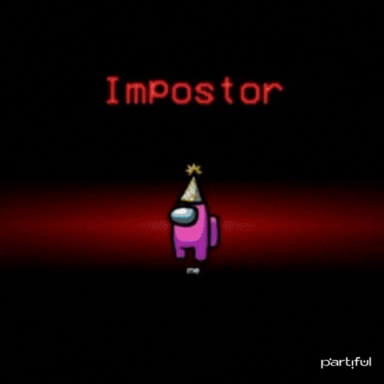
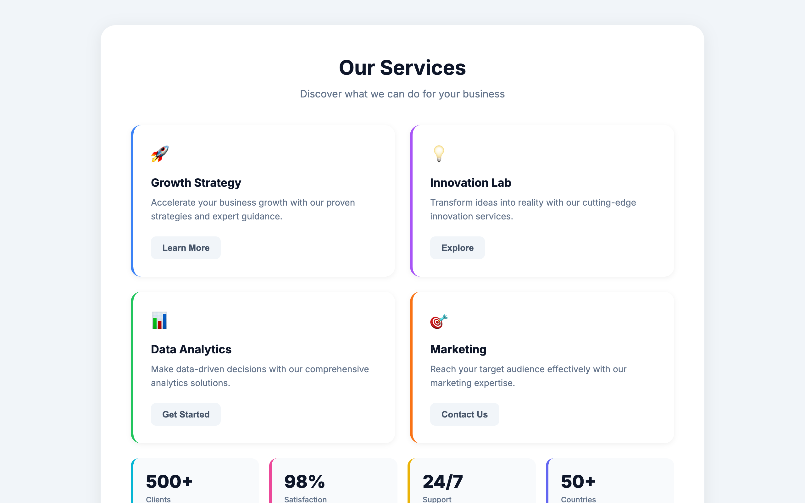

Os 4 erros com IA
Cometi todos. Pra você não cometer.
Protótipo Funcional · por Nanda Dias
Por que essa aula vem agora
IA não erra. Ela amplifica.
- IA dá velocidade.
- Velocidade amplifica decisão.
- Decisão sem critério = retrabalho mais rápido.
- Por isso essa aula vem antes da mão na massa.
Pedir o app inteiro
de uma vez
Erro 01 · contraste
Zero-shot vs Multi-shot prompting
● Errado
"Crie um app de tarefas com login, lista, drag-and-drop e modo dark"
800 linhas de uma vez. 4 problemas misturados. Você não sabe o que veio do que pediu. Mexer em um quebra o outro.
● Certo
"Crie só a lista. Hardcode 3 itens. Sem persistência."
30 linhas. 1 problema só. Você entende o que mudou. O próximo passo é claro.
Aceitar a primeira versão
Rodou? então tá pronto.
Erro 02 · sintomas
Funcionou na primeira ≠ funcionou pra valer
- Você testou o happy path. Testou o sad path?
- Você viu com 3 itens. Viu com 300?
- Você viu com texto curto. Viu com 200 caracteres?
- Você viu com internet. Viu offline?
- IA otimiza para "parecer pronto". Nós vamos focar em "ser real".

Focar apenas na saída
Erro 03 · cura
Nosso processo está mais no prompt do que no protótipo
prompt-evolution.md
# v1 (ingênuo)
# v2 (com dado realista)
# v3 (com edge cases)
# v4 (com estados)
Deixar a IA decidir
o que importa
Erro 04 · diagnóstico
IA não tem gosto. Você tem.
- IA otimiza pelo padrão da internet: cards genéricos, gradiente roxo, ícone redondo.
- ela conhece os patterns, mas não sabe o motivo deles existirem.
- ela propaga vieses.

Pra levar
Para não errar mais rápido...
- Erro 01 → Quebre em pedaços. Um componente por vez.
- Erro 02 → Não aceite a primeira versão. Teste sad path, 300 itens, offline.
- Erro 03 → Itere a entrada, não a saída. O processo está no prompt.
- Erro 04 → Imponha critério. A IA não tem gosto — você tem.